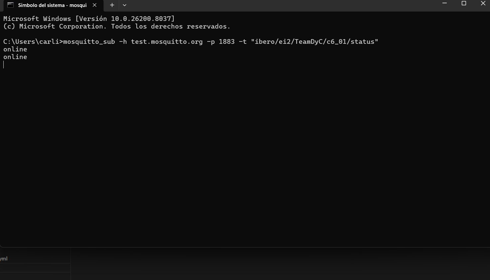
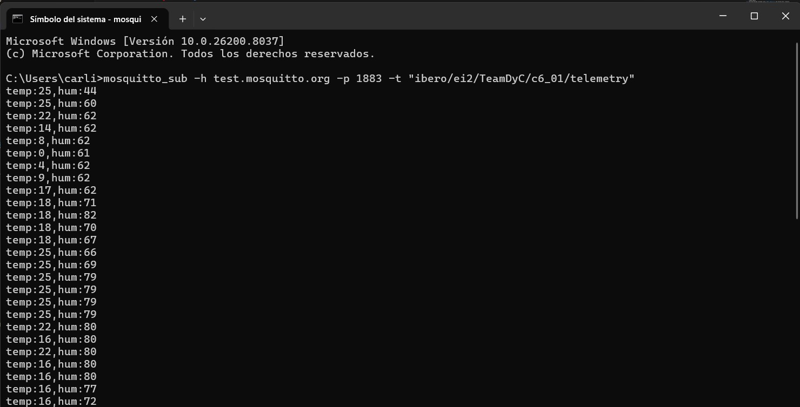
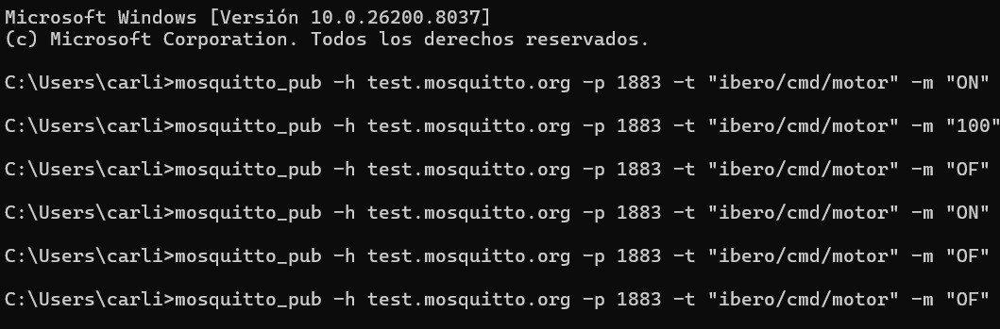

Session — Wi-Fi + MQTT: Potentiometers and Motor Control
Implement an ESP32-based system with Wi-Fi connectivity and MQTT communication to publish simulated temperature/humidity values and remotely control a DC motor.
1) Activity Goals
- [ ] Read a temperature value simulated with a potentiometer.
- [ ] Read a humidity value simulated with a potentiometer.
- [ ] Publish both variables to MQTT topics.
- [ ] Control a DC motor remotely through MQTT messages.
- [ ] Document evidence (serial logs + MQTT Explorer + video).
2) Materials & Setup
BOM (Bill of Materials)
| # | Item | Qty | Link/Source | Cost (MXN) | Notes |
|---|---|---|---|---|---|
| 1 | ESP32 Dev Board | 1 | Local Store / Amazon / MercadoLibre | ____ | Main development board |
| 2 | DC Motor | 1 | Local electronics store / Amazon / MercadoLibre | ____ | Remotely controlled actuator |
| 3 | Potentiometer (Temperature) | 1 | Local electronics store | ____ | Simulates temperature sensor |
| 4 | Potentiometer (Humidity) | 1 | Local electronics store | ____ | Simulates humidity sensor |
| 5 | Motor driver | 1 | Local electronics store / Amazon / MercadoLibre | ____ | Required to drive the motor safely |
| 6 | Jumper wires | Several | Local electronics store | ____ | For circuit connections |
Tools/Software
- Framework: ESP-IDF + FreeRTOS
- Build/Flash/Monitor:
idf.py build flash monitor - MQTT Client: MQTT Explorer
- Broker:
mqtt://test.mosquitto.org:1883 - OS/Environment: Windows
Wiring / Safety
- Board power: USB 5 V from the host PC.
- Potentiometers: connected to ESP32 analog inputs.
- Motor: connected through driver stage to ESP32 output pins.
- PWM control: motor speed controlled using LEDC.
- Verify all wiring before powering the board.
3) Procedure (what you did)
- Initialized NVS with
nvs_flash_init(). - Configured the ESP32 in Wi-Fi station mode.
- Registered Wi-Fi and IP event handlers.
- Waited until the ESP32 obtained an IP address using an EventGroup.
- Initialized the motor control pins:
ENA_GPIOfor PWM speed controlIN1_GPIOandIN2_GPIOfor motor direction- Configured the ADC in oneshot mode for two channels:
- one potentiometer for temperature
- one potentiometer for humidity
- Created a task to continuously read both analog values.
- Converted the raw ADC values into:
- temperature range:
0–50 °C - humidity range:
0–100 % - Published telemetry data to the MQTT topic when the values changed significantly.
- Connected the ESP32 to the MQTT broker.
- Subscribed to MQTT topics for motor control:
- motor ON/OFF
- speed update
- Verified message exchange using MQTT Explorer and tested motor response.
4) Data, Tests & Evidence
MQTT Connection Established

Figure 1. Serial terminal showing the ESP32 successfully connected to Wi-Fi and later connected to the MQTT broker. This confirms that the board is ready to publish telemetry and receive remote control commands.
Telemetry Publishing

Figure 2. Serial output showing temperature and humidity values obtained from the potentiometers and published through the telemetry topic. The values change according to the analog position of each potentiometer.
Motor Control from MQTT Explorer

Figure 3. MQTT Explorer used to send commands to the ESP32 for turning the motor ON/OFF and updating its speed. This demonstrates successful bidirectional MQTT communication.
Videos (Evidence)
Video 1. Demo: ESP32 publishes potentiometer-based telemetry and receives MQTT motor control commands.
5) Analysis
How the system works (MQTT-based control)
- The ESP32 connects to a Wi-Fi network in STA mode.
- Once connected, it establishes communication with a public MQTT broker.
- Two potentiometers simulate temperature and humidity values through ADC readings.
- The firmware converts the raw analog values into scaled engineering values and publishes them as telemetry.
- MQTT Explorer is used as the remote client to observe published data and send commands.
- The motor is controlled by subscribing to command topics:
- one topic defines ON/OFF state
- one topic updates speed
- This architecture is simple, modular, and useful for IoT-style monitoring and remote control systems.
6) Code
Full firmware (single file)
main/main.c
#include <stdio.h>
#include <string.h>
#include <stdlib.h>
#include "freertos/FreeRTOS.h"
#include "freertos/task.h"
#include "freertos/event_groups.h"
#include "esp_system.h"
#include "esp_wifi.h"
#include "esp_event.h"
#include "esp_log.h"
#include "esp_netif.h"
#include "nvs_flash.h"
#include "mqtt_client.h"
#include "driver/ledc.h"
#include "driver/gpio.h"
#include "esp_adc/adc_oneshot.h"
#define WIFI_SSID "iPhone de Jose maria"
#define WIFI_PASS "123456789"
#define TEAM_ID "CAMACHO"
#define DEVICE_ID "esp32_mqtt"
#define TOPIC_CMD "ibero/ei2/" TEAM_ID "/" DEVICE_ID "/cmd"
#define TOPIC_TLM "ibero/ei2/" TEAM_ID "/" DEVICE_ID "/telemetry"
#define TOPIC_STAT "ibero/ei2/" TEAM_ID "/" DEVICE_ID "/status"
#define TOPIC_MOTOR "ibero/cmd/motor"
#define TOPIC_SPEED "ibero/cmd/speed"
#define ENA_GPIO 4
#define IN1_GPIO 18
#define IN2_GPIO 19
#define TEMP_ADC_CHANNEL ADC_CHANNEL_0
#define HUM_ADC_CHANNEL ADC_CHANNEL_1
static EventGroupHandle_t wifi_event_group;
#define WIFI_CONNECTED_BIT BIT0
static const char *TAG = "IBERO_MQTT";
static esp_mqtt_client_handle_t client = NULL;
static int current_speed = 0;
static int motor_state = 0;
static void wifi_event_handler(void* arg,
esp_event_base_t event_base,
int32_t event_id,
void* event_data)
{
if (event_base == WIFI_EVENT && event_id == WIFI_EVENT_STA_START)
esp_wifi_connect();
else if (event_base == WIFI_EVENT && event_id == WIFI_EVENT_STA_DISCONNECTED)
esp_wifi_connect();
else if (event_base == IP_EVENT && event_id == IP_EVENT_STA_GOT_IP)
xEventGroupSetBits(wifi_event_group, WIFI_CONNECTED_BIT);
}
void wifi_init_sta(void)
{
wifi_event_group = xEventGroupCreate();
esp_netif_init();
esp_event_loop_create_default();
esp_netif_create_default_wifi_sta();
wifi_init_config_t cfg = WIFI_INIT_CONFIG_DEFAULT();
esp_wifi_init(&cfg);
esp_event_handler_instance_register(WIFI_EVENT,
ESP_EVENT_ANY_ID,
&wifi_event_handler,
NULL,
NULL);
esp_event_handler_instance_register(IP_EVENT,
IP_EVENT_STA_GOT_IP,
&wifi_event_handler,
NULL,
NULL);
wifi_config_t wifi_config = {
.sta = {
.ssid = WIFI_SSID,
.password = WIFI_PASS
}
};
esp_wifi_set_mode(WIFI_MODE_STA);
esp_wifi_set_config(WIFI_IF_STA, &wifi_config);
esp_wifi_start();
xEventGroupWaitBits(wifi_event_group,
WIFI_CONNECTED_BIT,
pdFALSE,
pdFALSE,
portMAX_DELAY);
}
static void motor_init()
{
gpio_set_direction(IN1_GPIO, GPIO_MODE_OUTPUT);
gpio_set_direction(IN2_GPIO, GPIO_MODE_OUTPUT);
ledc_timer_config_t timer = {
.speed_mode = LEDC_LOW_SPEED_MODE,
.timer_num = LEDC_TIMER_0,
.duty_resolution = LEDC_TIMER_8_BIT,
.freq_hz = 5000,
.clk_cfg = LEDC_AUTO_CLK
};
ledc_timer_config(&timer);
ledc_channel_config_t channel = {
.gpio_num = ENA_GPIO,
.speed_mode = LEDC_LOW_SPEED_MODE,
.channel = LEDC_CHANNEL_0,
.timer_sel = LEDC_TIMER_0,
.duty = 0
};
ledc_channel_config(&channel);
}
static void set_motor_speed(int speed)
{
ledc_set_duty(LEDC_LOW_SPEED_MODE, LEDC_CHANNEL_0, speed);
ledc_update_duty(LEDC_LOW_SPEED_MODE, LEDC_CHANNEL_0);
}
static void motor_forward()
{
gpio_set_level(IN1_GPIO, 1);
gpio_set_level(IN2_GPIO, 0);
}
static void motor_stop()
{
gpio_set_level(IN1_GPIO, 0);
gpio_set_level(IN2_GPIO, 0);
set_motor_speed(0);
}
static void sensor_task(void *pv)
{
adc_oneshot_unit_handle_t adc_handle;
adc_oneshot_unit_init_cfg_t init_config = {
.unit_id = ADC_UNIT_1,
};
adc_oneshot_new_unit(&init_config, &adc_handle);
adc_oneshot_chan_cfg_t config = {
.bitwidth = ADC_BITWIDTH_DEFAULT,
.atten = ADC_ATTEN_DB_12,
};
adc_oneshot_config_channel(adc_handle, TEMP_ADC_CHANNEL, &config);
adc_oneshot_config_channel(adc_handle, HUM_ADC_CHANNEL, &config);
int last_temp = -100;
int last_hum = -100;
while (1)
{
int raw_temp;
int raw_hum;
adc_oneshot_read(adc_handle, TEMP_ADC_CHANNEL, &raw_temp);
adc_oneshot_read(adc_handle, HUM_ADC_CHANNEL, &raw_hum);
int temperature = (raw_temp * 50) / 4095;
int humidity = (raw_hum * 100) / 4095;
if (abs(temperature - last_temp) >= 3 || abs(humidity - last_hum) >= 3)
{
printf("Temperatura: %d °C\n", temperature);
printf("Humedad: %d %%\n", humidity);
char msg[64];
sprintf(msg, "temp:%d,hum:%d", temperature, humidity);
if (client != NULL)
esp_mqtt_client_publish(client, TOPIC_TLM, msg, 0, 1, 0);
last_temp = temperature;
last_hum = humidity;
}
vTaskDelay(pdMS_TO_TICKS(300));
}
}
static void mqtt_event_handler(void *handler_args,
esp_event_base_t base,
int32_t event_id,
void *event_data)
{
esp_mqtt_event_handle_t event = event_data;
switch (event->event_id)
{
case MQTT_EVENT_CONNECTED:
printf("MQTT Connected\n");
esp_mqtt_client_subscribe(client, TOPIC_CMD, 1);
esp_mqtt_client_subscribe(client, TOPIC_MOTOR, 1);
esp_mqtt_client_subscribe(client, TOPIC_SPEED, 1);
esp_mqtt_client_publish(client, TOPIC_STAT, "online", 0, 1, 0);
break;
case MQTT_EVENT_DATA:
printf("Topic=%.*s Data=%.*s\n",
event->topic_len, event->topic,
event->data_len, event->data);
if (strncmp(event->topic, TOPIC_MOTOR, event->topic_len) == 0)
{
if (strncmp(event->data, "ON", event->data_len) == 0)
{
motor_state = 1;
motor_forward();
set_motor_speed(current_speed);
}
else if (strncmp(event->data, "OFF", event->data_len) == 0)
{
motor_state = 0;
motor_stop();
}
}
if (strncmp(event->topic, TOPIC_SPEED, event->topic_len) == 0)
{
int speed = atoi(event->data);
if (speed >= 0 && speed <= 255)
{
current_speed = speed;
if (motor_state)
set_motor_speed(speed);
}
}
break;
case MQTT_EVENT_DISCONNECTED:
printf("MQTT Disconnected\n");
break;
default:
break;
}
}
void mqtt_app_start(const char *broker_uri)
{
motor_init();
xTaskCreate(sensor_task, "sensor_task", 4096, NULL, 5, NULL);
esp_mqtt_client_config_t cfg = {
.broker.address.uri = broker_uri,
.session.keepalive = 30
};
client = esp_mqtt_client_init(&cfg);
esp_mqtt_client_register_event(client,
ESP_EVENT_ANY_ID,
mqtt_event_handler,
NULL);
esp_mqtt_client_start(client);
}
void app_main(void)
{
nvs_flash_init();
wifi_init_sta();
mqtt_app_start("mqtt://test.mosquitto.org:1883");
}
8) Files & Media
- Firmware:
main/main.c - Suggested images:
../img/mqtt_connection.png../img/mqtt_telemetry.png../img/mqtt_motor_control.png